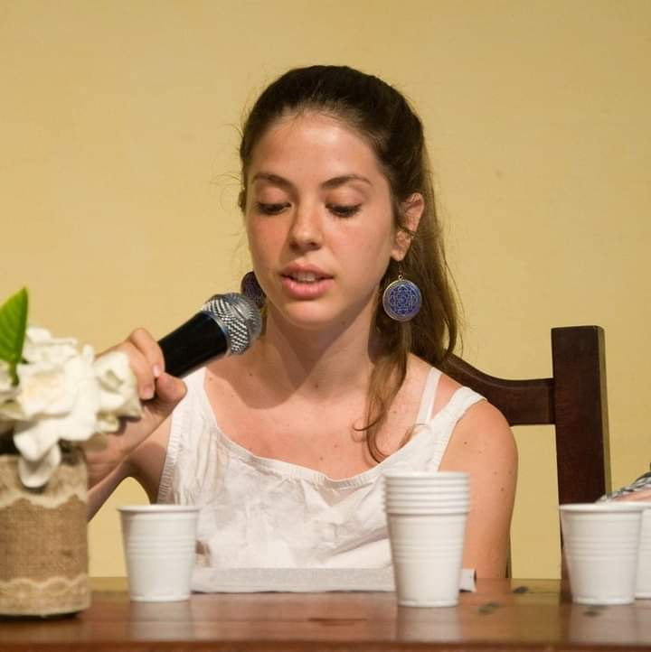
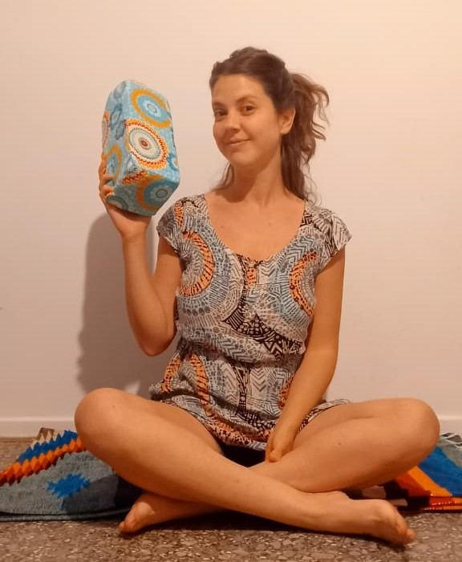

“El parto: La denegación del útero”
Mi primer acercamiento académico a la psicología perinatal con perspectiva de género Link al trabajo
¿Cómo interviene unx psicólogx perinatal? ¿Es necestaria su labor?
De la práctica a la teoría; de la tarea al estilo propio Link al trabajo

La diabetes como respuesta a un problema de cuidados
Situación clínica en una Maternidad de Avellaneda Link al trabajo
Card title
This is a longer card with supporting text below as a natural lead-in to additional content. This content is a little bit longer.